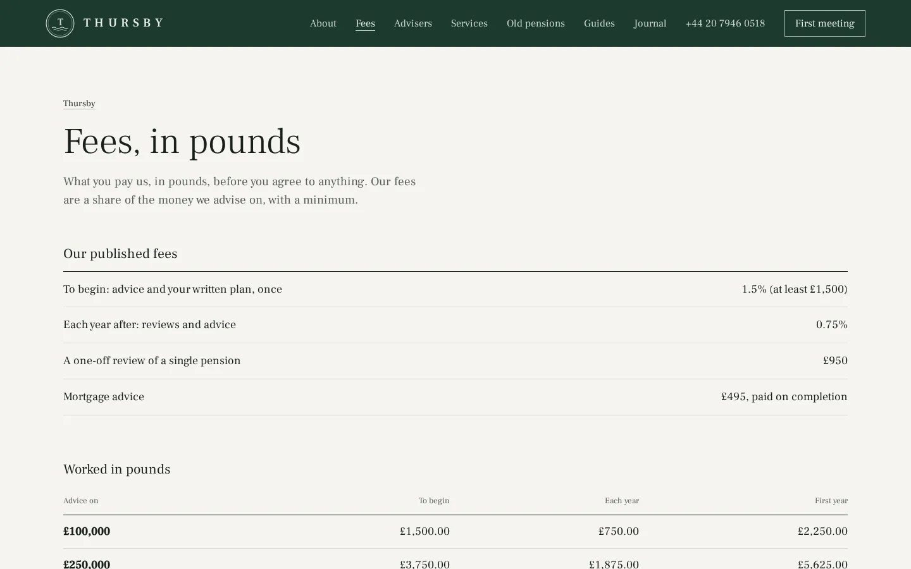
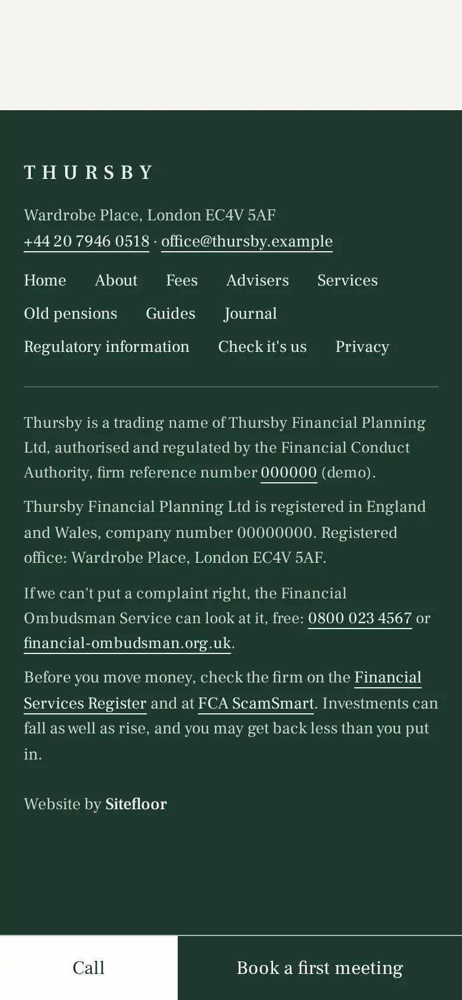
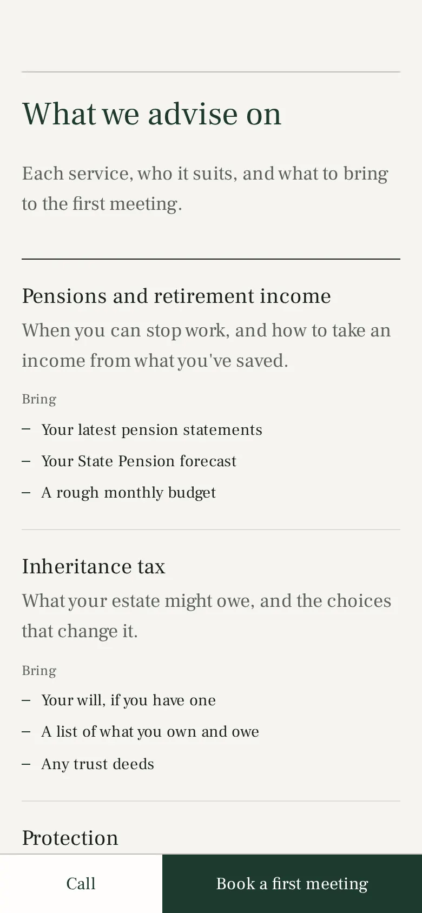
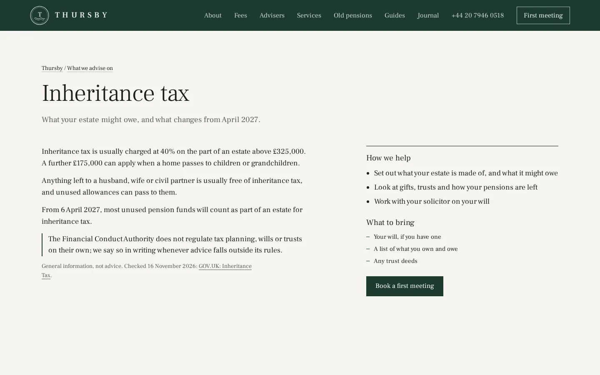
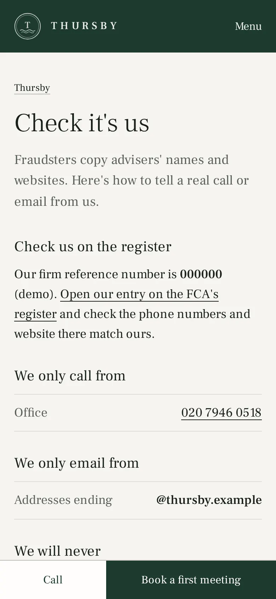

£99
then £25 a month
Starter
- Your home page in this design
- The regulator in every footer
- Advisers, numbered and linked
- Every service, with what to bring
- Regulatory, independence and Check it's us pages
Features II · III · IV · VIII
Specimen · not legal tender
Thursby, a website for an independent financial adviser, read as the note in your hand. Its face value is the fee, in pounds. Every security feature is something the regulator asks an adviser to show. Type an amount: the note reprints.
Thursby
Statement of advice fees
Thursby promises to charge the bearer, for the first year of advice,
£5,625.00
£
Initial advice £3,750.00 once, then £1,875.00 each year, which is £156.25 a month.
Thursby's published fees: 1.5% to begin, at least £1,500, then 0.75% each year. Platform and fund charges are separate, and shown in pounds too. Investments can fall as well as rise, and you may get back less than you put in.
Face value
Advisers usually quote a percentage. Thursby's home page turns it into money: type what you'd bring and the statement fills in, pence and all, with the first year under a double rule.
Signature · the fees page from Plus
Arithmetic on the fees the firm publishes. Nothing projected, nothing grown.
On a phone. Presets, or any amount typed. A minimum fee applies by itself; a figure it can't read shows dashes and says why.
Watermark
Every page of Thursby's site carries the regulator in its paper: the firm's FCA number linked to its own entry on the register, the company, the Financial Ombudsman's free number and the ScamSmart check.
Every planAuthorised and regulated.Thursby is a trading name of Thursby Financial Planning Ltd, authorised and regulated by the Financial Conduct Authority, firm reference number 000000. If we can't put a complaint right, the Financial Ombudsman Service can look at it, free: 0800 023 4567.

The footer, on every page. A client's site links to its own register entry; it won't build with a made-up number, and a demo won't build with a real one.
Serial numbers
Each adviser carries their individual reference number, linked to the FCA register, so a client can check the person as well as the firm.
Every plan · a page of their own from PlusDemo numbers end in noughts; they open the register's search.
Raised print
The first meeting goes further when people arrive with the right papers. Each service says who it suits, and lists exactly what to bring.
Every plan · checklist and secure upload from PlusWhen you can stop work, and how to take an income from what you've saved.
Latest pension statementsState Pension forecastA rough monthly budget
What your estate might owe, and the choices that change it.
Your willWhat you own and oweAny trust deeds
Buying, remortgaging and borrowing into retirement.
Payslips or accountsYour mortgage statement

Plus adds the first meeting: a checklist that keeps its ticks on the client's own phone, and a link to the firm's secure upload, never plain email.
The foil
On the pensions page: a year of birth in, and out come the year someone can usually first take money from a pension and their State Pension age, under the law today. No money, no growth.
SignatureIt fails safe. Years caught in a change of the rules go to GOV.UK's checker, and the dates switch themselves off if the rules aren't re-checked within six months.
The thread
Most people have left a pension behind somewhere. Thursby's old-pensions page threads every past employer into one tracing list to copy or print, with the government's free tracing service and the questions to ask each scheme.
SignatureIt stays on the visitor's own device. Nothing is stored, sent or searched.
Date of issue
A page for each subject (pensions, inheritance tax, protection, mortgages, business owners, later life), each one general information, not advice, with its sources and the day they were checked. Where the FCA doesn't regulate the advice, the page says so.
Signature
Guides take the same care at life's turning points: retiring in the next five years, inheriting money, a parent needing care. The journal shows who wrote each note and who in compliance approved it, and when.
Know a forgery
Cloned firms borrow real advisers' names. Thursby's site has a page that tells a real call or email from a fake one: the only numbers and addresses the firm uses, what it will never ask, and how to call back.
Every plan
Denominations
Every plan is this design, in the firm's colours, fees and words. Twelve-month minimum, then month to month.
£99
then £25 a month
Features II · III · IV · VIII
£199
then £30 a month
Adds the fees page to I
£349
then £35 a month
Every feature, I to VIII
Cleared
Measured by Lighthouse on Thursby's home page, as a phone on a slow connection.
Issue your own
Send us your fee schedule and your firm reference number. We'll make a free mockup of your home page with your own fees on the statement.
hello@sitefloor.com